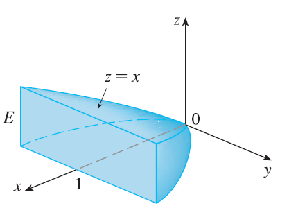
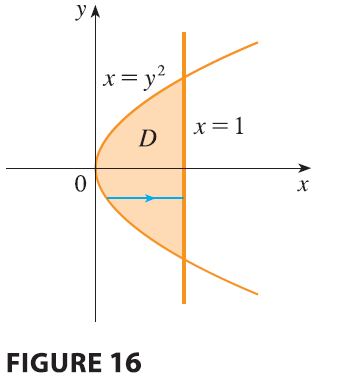

EXAMPLE 6 Find the center of mass of a solid of constant density that is bounded by the parabolic cylinder \(x = y^2\) and the planes \(x = z, z = 0,\) and \(x = 1\).


SOLUTION The solid \(E\) and its projection onto the \(xy\)-plane are shown in Figure 16. The lower and upper surfaces of \(E\) are the planes \(z = 0\) and \(z = x\), so we describe \(E\) as a type 1 region: \[ E = \{(x, y, z) | -1 \le y \le 1, y^2 \le x \le 1, 0 \le z \le x\} \] Then, if the density is \(\rho(x, y, z) = \rho\), the mass is \[ m = \iiint_E \rho dV = \int_{-1}^1 \int_{y^2}^1 \int_0^x \rho dz dx dy = \rho \int_{-1}^1 \int_{y^2}^1 x dx dy \] \[ = \rho \int_{-1}^1 \left[ \frac{x^2}{2} \right]_{x=y^2}^{x=1} dy = \frac{\rho}{2} \int_{-1}^1 (1 - y^4) dy = \rho \int_0^1 (1 - y^4) dy = \rho \left[ y - \frac{y^5}{5} \right]_0^1 = \frac{4\rho}{5} \] Because of the symmetry of \(E\) and \(\rho\) about the \(xz\)-plane, we can immediately say that \(M_{xz} = 0\) and therefore \(\bar{y} = 0\). The other moments are \[ M_{yz} = \iiint_E x\rho dV = \int_{-1}^1 \int_{y^2}^1 \int_0^x x\rho dz dx dy = \rho \int_{-1}^1 \int_{y^2}^1 x^2 dx dy \] \[ = \rho \int_{-1}^1 \left[ \frac{x^3}{3} \right]_{x=y^2}^{x=1} dy = \frac{2\rho}{3} \int_0^1 (1 - y^6) dy = \frac{2\rho}{3} \left[ y - \frac{y^7}{7} \right]_0^1 = \frac{4\rho}{7} \] \[ M_{xy} = \iiint_E z\rho dV = \int_{-1}^1 \int_{y^2}^1 \int_0^x z\rho dz dx dy = \rho \int_{-1}^1 \int_{y^2}^1 \left[ \frac{z^2}{2} \right]_{z=0}^{z=x} dx dy \] \[ = \frac{\rho}{2} \int_{-1}^1 \int_{y^2}^1 x^2 dx dy = \frac{\rho}{2} \frac{4}{7} = \frac{2\rho}{7} \] Therefore the center of mass is \[ (\bar{x}, \bar{y}, \bar{z}) = \left( \frac{M_{yz}}{m}, \frac{M_{xz}}{m}, \frac{M_{xy}}{m} \right) = \left( \frac{4\rho/7}{4\rho/5}, 0, \frac{2\rho/7}{4\rho/5} \right) = \left( \frac{5}{7}, 0, \frac{5}{14} \right) \]